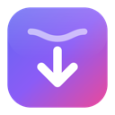

¡La extensión está instalada!
Falta conectarla con la app de Streamline.
- 1Cuando el navegador pregunte «¿Abrir Streamline?», marca Permitir siempre y pulsa Abrir.
- 2Fija el icono: pulsa la pieza de puzzle 🧩 de la barra y luego el alfiler 📌 junto a Streamline.